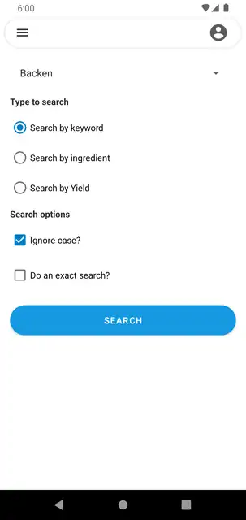
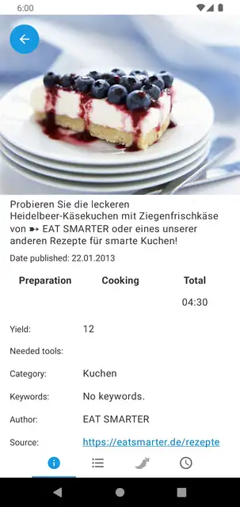

Nextcloud Cookbook
مال وتسوق
This app is a viewer for recipes in Nextcloud App. The synchronisation can be done direct (with nextloud) or with the local storage. Synchronize directly works with Single Sign On (SSO) per nextcloud client. The local storage can synchronized in other ways, there is no dependency to a client. First
✓ ترخيص مفتوح (GPL-3.0-or-later) · آخر تحديث: 2024-03-05
3.0.2الإصدار
3.2 MBالحجم
GPL-3.0-or-laterالرخصة
Open in Kanzتحميل APK (3.2 MB)
Download APK
SHA-256: e6eec9c6527703ca21ec9820adebcbdd3486a7b1443942aff38e4c63ba65f785


تطبيقات تانية لنفس المطوّر (2)
More apps from this developer: de.micmun
امسح الكود لفتح صفحة التطبيق
Scan to open this app page
لو كنز مش متثبت عندك: نزّل متجر كنز.
Not installed? Get the Kanz store.